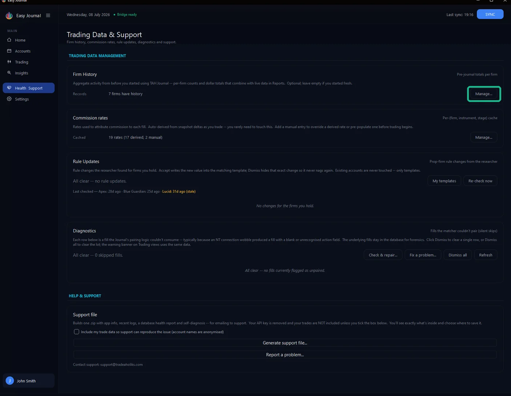
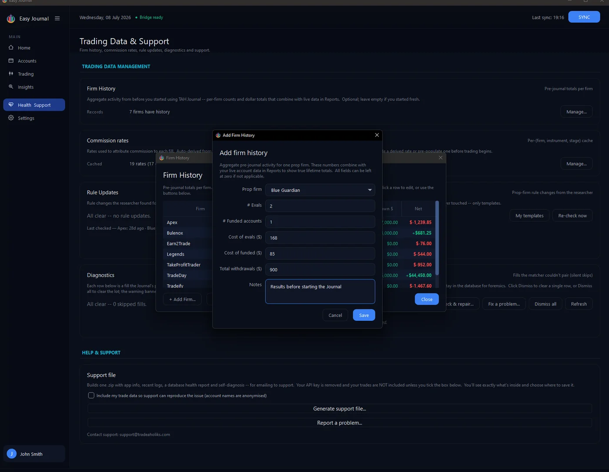
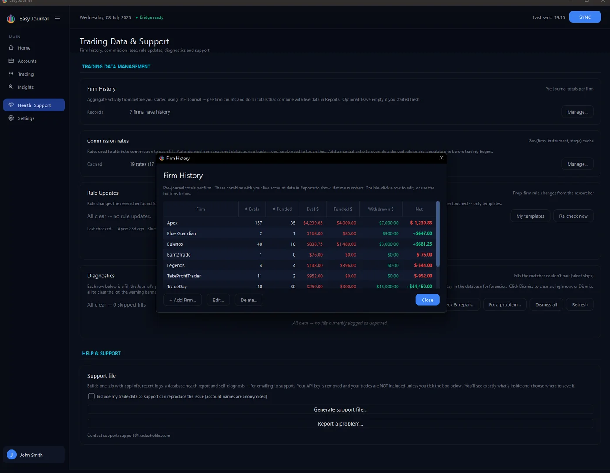

Where to find it 1. Open Health & Support in the left sidebar, and click Manage... on the Firm History card.

Adding a firm 2. Click + Add Firm..., pick the firm, and fill in what you know - number of evals, funded accounts, what they cost, what you withdrew. Rough numbers are fine, and any field except the firm can stay blank. We entered 2 evals ($168), 1 funded ($85) and $900 withdrawn:

3. Click Save - the firm appears in the table with its net worked out:

Editing and deleting Double-click a row (or select it and click Edit...) to change it. Delete... removes the row after a confirmation and as the confirmation says, only the historical totals go; live accounts at the firm are untouched:

Tip: Even approximate numbers make the all-time view far more truthful than pretending your history began the day you installed the Journal.